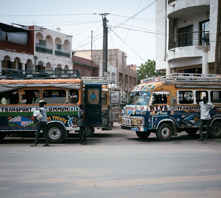

Nouvelle ligne de bus : premier bilan
10 mars 2026 - Transport - 1 min de lecture

Trois mois apres son lancement la ligne 7 fait ses comptes.
Les usagers saluent les gains de temps en journee mais denoncent des retards aux heures de pointe. La mairie annonce deux bus supplementaires.